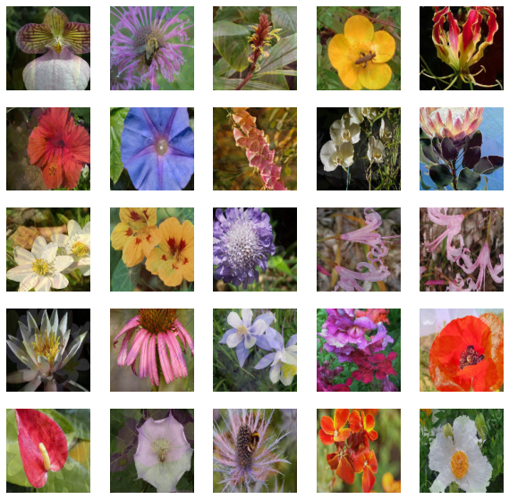
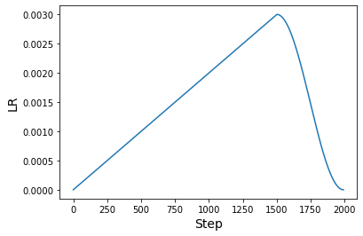

Knowledge distillation recipes
Author: Sayak Paul
Date created: 2021/08/01
Last modified: 2021/08/01
Description: Training better student models via knowledge distillation with function matching.

Introduction
Knowledge distillation (Hinton et al.) is a technique that enables us to compress larger models into smaller ones. This allows us to reap the benefits of high performing larger models, while reducing storage and memory costs and achieving higher inference speed:
- Smaller models -> smaller memory footprint
- Reduced complexity -> fewer floating-point operations (FLOPs)
In Knowledge distillation: A good teacher is patient and consistent, Beyer et al. investigate various existing setups for performing knowledge distillation and show that all of them lead to sub-optimal performance. Due to this, practitioners often settle for other alternatives (quantization, pruning, weight clustering, etc.) when developing production systems that are resource-constrained.
Beyer et al. investigate how we can improve the student models that come out of the knowledge distillation process and always match the performance of their teacher models. In this example, we will study the recipes introduced by them, using the Flowers102 dataset. As a reference, with these recipes, the authors were able to produce a ResNet50 model that achieves 82.8% accuracy on the ImageNet-1k dataset.
In case you need a refresher on knowledge distillation and want to study how it is implemented in Keras, you can refer to this example. You can also follow this example that shows an extension of knowledge distillation applied to consistency training.
To follow this example, you will need TensorFlow 2.5 or higher as well as TensorFlow Addons, which can be installed using the command below:
!pip install -q tensorflow-addons
Imports
from tensorflow import keras
import tensorflow_addons as tfa
import tensorflow as tf
import matplotlib.pyplot as plt
import numpy as np
import tensorflow_datasets as tfds
tfds.disable_progress_bar()
Hyperparameters and constants
AUTO = tf.data.AUTOTUNE # Used to dynamically adjust parallelism.
BATCH_SIZE = 64
# Comes from Table 4 and "Training setup" section.
TEMPERATURE = 10 # Used to soften the logits before they go to softmax.
INIT_LR = 0.003 # Initial learning rate that will be decayed over the training period.
WEIGHT_DECAY = 0.001 # Used for regularization.
CLIP_THRESHOLD = 1.0 # Used for clipping the gradients by L2-norm.
# We will first resize the training images to a bigger size and then we will take
# random crops of a lower size.
BIGGER = 160
RESIZE = 128
Load the Flowers102 dataset
train_ds, validation_ds, test_ds = tfds.load(
"oxford_flowers102", split=["train", "validation", "test"], as_supervised=True
)
print(f"Number of training examples: {train_ds.cardinality()}.")
print(
f"Number of validation examples: {validation_ds.cardinality()}."
)
print(f"Number of test examples: {test_ds.cardinality()}.")
Number of training examples: 1020.
Number of validation examples: 1020.
Number of test examples: 6149.
Teacher model
As is common with any distillation technique, it's important to first train a well-performing teacher model which is usually larger than the subsequent student model. The authors distill a BiT ResNet152x2 model (teacher) into a BiT ResNet50 model (student).
BiT stands for Big Transfer and was introduced in Big Transfer (BiT): General Visual Representation Learning. BiT variants of ResNets use Group Normalization (Wu et al.) and Weight Standardization (Qiao et al.) in place of Batch Normalization (Ioffe et al.). In order to limit the time it takes to run this example, we will be using a BiT ResNet101x3 already trained on the Flowers102 dataset. You can refer to this notebook to learn more about the training process. This model reaches 98.18% accuracy on the test set of Flowers102.
The model weights are hosted on Kaggle as a dataset. To download the weights, follow these steps:
- Create an account on Kaggle here.
- Go to the "Account" tab of your user profile.
- Select "Create API Token". This will trigger the download of
kaggle.json, a file containing your API credentials. - From that JSON file, copy your Kaggle username and API key.
Now run the following:
import os
os.environ["KAGGLE_USERNAME"] = "" # TODO: enter your Kaggle user name here
os.environ["KAGGLE_KEY"] = "" # TODO: enter your Kaggle key here
Once the environment variables are set, run:
$ kaggle datasets download -d spsayakpaul/bitresnet101x3flowers102
$ unzip -qq bitresnet101x3flowers102.zip
This should generate a folder named T-r101x3-128 which is essentially a teacher
SavedModel.
import os
os.environ["KAGGLE_USERNAME"] = "" # TODO: enter your Kaggle user name here
os.environ["KAGGLE_KEY"] = "" # TODO: enter your Kaggle API key here
!kaggle datasets download -d spsayakpaul/bitresnet101x3flowers102
!unzip -qq bitresnet101x3flowers102.zip
# Since the teacher model is not going to be trained further we make
# it non-trainable.
teacher_model = keras.models.load_model(
"/home/jupyter/keras-io/examples/keras_recipes/T-r101x3-128"
)
teacher_model.trainable = False
teacher_model.summary()
Model: "my_bi_t_model_1"
_________________________________________________________________
Layer (type) Output Shape Param #
=================================================================
dense_1 (Dense) multiple 626790
_________________________________________________________________
keras_layer_1 (KerasLayer) multiple 381789888
=================================================================
Total params: 382,416,678
Trainable params: 0
Non-trainable params: 382,416,678
_________________________________________________________________
The "function matching" recipe
To train a high-quality student model, the authors propose the following changes to the student training workflow:
- Use an aggressive variant of MixUp (Zhang et al.).
This is done by sampling the
alphaparameter from a uniform distribution instead of a beta distribution. MixUp is used here in order to help the student model capture the function underlying the teacher model. MixUp linearly interpolates between different samples across the data manifold. So the rationale here is if the student is trained to fit that it should be able to match the teacher model better. To incorporate more invariance MixUp is coupled with "Inception-style" cropping (Szegedy et al.). This is where the "function matching" term makes its way in the original paper. - Unlike other works (Noisy Student Training for example), both the teacher and student models receive the same copy of an image, which is mixed up and randomly cropped. By providing the same inputs to both the models, the authors make the teacher consistent with the student.
- With MixUp, we are essentially introducing a strong form of regularization when training the student. As such, it should be trained for a relatively long period of time (1000 epochs at least). Since the student is trained with strong regularization, the risk of overfitting due to a longer training schedule are also mitigated.
In summary, one needs to be consistent and patient while training the student model.
Data input pipeline
def mixup(images, labels):
alpha = tf.random.uniform([], 0, 1)
mixedup_images = alpha * images + (1 - alpha) * tf.reverse(images, axis=[0])
# The labels do not matter here since they are NOT used during
# training.
return mixedup_images, labels
def preprocess_image(image, label, train=True):
image = tf.cast(image, tf.float32) / 255.0
if train:
image = tf.image.resize(image, (BIGGER, BIGGER))
image = tf.image.random_crop(image, (RESIZE, RESIZE, 3))
image = tf.image.random_flip_left_right(image)
else:
# Central fraction amount is from here:
# https://git.io/J8Kda.
image = tf.image.central_crop(image, central_fraction=0.875)
image = tf.image.resize(image, (RESIZE, RESIZE))
return image, label
def prepare_dataset(dataset, train=True, batch_size=BATCH_SIZE):
if train:
dataset = dataset.map(preprocess_image, num_parallel_calls=AUTO)
dataset = dataset.shuffle(BATCH_SIZE * 10)
else:
dataset = dataset.map(
lambda x, y: (preprocess_image(x, y, train)), num_parallel_calls=AUTO
)
dataset = dataset.batch(batch_size)
if train:
dataset = dataset.map(mixup, num_parallel_calls=AUTO)
dataset = dataset.prefetch(AUTO)
return dataset
Note that for brevity, we used mild crops for the training set but in practice "Inception-style" preprocessing should be applied. You can refer to this script for a closer implementation. Also, the ground-truth labels are not used for training the student.
train_ds = prepare_dataset(train_ds, True)
validation_ds = prepare_dataset(validation_ds, False)
test_ds = prepare_dataset(test_ds, False)
Visualization
sample_images, _ = next(iter(train_ds))
plt.figure(figsize=(10, 10))
for n in range(25):
ax = plt.subplot(5, 5, n + 1)
plt.imshow(sample_images[n].numpy())
plt.axis("off")
plt.show()

Student model
For the purpose of this example, we will use the standard ResNet50V2 (He et al.).
def get_resnetv2():
resnet_v2 = keras.applications.ResNet50V2(
weights=None,
input_shape=(RESIZE, RESIZE, 3),
classes=102,
classifier_activation="linear",
)
return resnet_v2
get_resnetv2().count_params()
23773798
Compared to the teacher model, this model has 358 Million fewer parameters.
Distillation utility
We will reuse some code from this example on knowledge distillation.
class Distiller(tf.keras.Model):
def __init__(self, student, teacher):
super().__init__()
self.student = student
self.teacher = teacher
self.loss_tracker = keras.metrics.Mean(name="distillation_loss")
@property
def metrics(self):
metrics = super().metrics
metrics.append(self.loss_tracker)
return metrics
def compile(
self, optimizer, metrics, distillation_loss_fn, temperature=TEMPERATURE,
):
super().compile(optimizer=optimizer, metrics=metrics)
self.distillation_loss_fn = distillation_loss_fn
self.temperature = temperature
def train_step(self, data):
# Unpack data
x, _ = data
# Forward pass of teacher
teacher_predictions = self.teacher(x, training=False)
with tf.GradientTape() as tape:
# Forward pass of student
student_predictions = self.student(x, training=True)
# Compute loss
distillation_loss = self.distillation_loss_fn(
tf.nn.softmax(teacher_predictions / self.temperature, axis=1),
tf.nn.softmax(student_predictions / self.temperature, axis=1),
)
# Compute gradients
trainable_vars = self.student.trainable_variables
gradients = tape.gradient(distillation_loss, trainable_vars)
# Update weights
self.optimizer.apply_gradients(zip(gradients, trainable_vars))
# Report progress
self.loss_tracker.update_state(distillation_loss)
return {"distillation_loss": self.loss_tracker.result()}
def test_step(self, data):
# Unpack data
x, y = data
# Forward passes
teacher_predictions = self.teacher(x, training=False)
student_predictions = self.student(x, training=False)
# Calculate the loss
distillation_loss = self.distillation_loss_fn(
tf.nn.softmax(teacher_predictions / self.temperature, axis=1),
tf.nn.softmax(student_predictions / self.temperature, axis=1),
)
# Report progress
self.loss_tracker.update_state(distillation_loss)
self.compiled_metrics.update_state(y, student_predictions)
results = {m.name: m.result() for m in self.metrics}
return results
Learning rate schedule
A warmup cosine learning rate schedule is used in the paper. This schedule is also typical for many pre-training methods especially for computer vision.
# Some code is taken from:
# https://www.kaggle.com/ashusma/training-rfcx-tensorflow-tpu-effnet-b2.
class WarmUpCosine(keras.optimizers.schedules.LearningRateSchedule):
def __init__(
self, learning_rate_base, total_steps, warmup_learning_rate, warmup_steps
):
super().__init__()
self.learning_rate_base = learning_rate_base
self.total_steps = total_steps
self.warmup_learning_rate = warmup_learning_rate
self.warmup_steps = warmup_steps
self.pi = tf.constant(np.pi)
def __call__(self, step):
if self.total_steps < self.warmup_steps:
raise ValueError("Total_steps must be larger or equal to warmup_steps.")
cos_annealed_lr = tf.cos(
self.pi
* (tf.cast(step, tf.float32) - self.warmup_steps)
/ float(self.total_steps - self.warmup_steps)
)
learning_rate = 0.5 * self.learning_rate_base * (1 + cos_annealed_lr)
if self.warmup_steps > 0:
if self.learning_rate_base < self.warmup_learning_rate:
raise ValueError(
"Learning_rate_base must be larger or equal to "
"warmup_learning_rate."
)
slope = (
self.learning_rate_base - self.warmup_learning_rate
) / self.warmup_steps
warmup_rate = slope * tf.cast(step, tf.float32) + self.warmup_learning_rate
learning_rate = tf.where(
step < self.warmup_steps, warmup_rate, learning_rate
)
return tf.where(
step > self.total_steps, 0.0, learning_rate, name="learning_rate"
)
We can now plot a a graph of learning rates generated using this schedule.
ARTIFICIAL_EPOCHS = 1000
ARTIFICIAL_BATCH_SIZE = 512
DATASET_NUM_TRAIN_EXAMPLES = 1020
TOTAL_STEPS = int(
DATASET_NUM_TRAIN_EXAMPLES / ARTIFICIAL_BATCH_SIZE * ARTIFICIAL_EPOCHS
)
scheduled_lrs = WarmUpCosine(
learning_rate_base=INIT_LR,
total_steps=TOTAL_STEPS,
warmup_learning_rate=0.0,
warmup_steps=1500,
)
lrs = [scheduled_lrs(step) for step in range(TOTAL_STEPS)]
plt.plot(lrs)
plt.xlabel("Step", fontsize=14)
plt.ylabel("LR", fontsize=14)
plt.show()

The original paper uses at least 1000 epochs and a batch size of 512 to perform "function matching". The objective of this example is to present a workflow to implement the recipe and not to demonstrate the results when they are applied at full scale. However, these recipes will transfer to the original settings from the paper. Please refer to this repository if you are interested in finding out more.
Training
optimizer = tfa.optimizers.AdamW(
weight_decay=WEIGHT_DECAY, learning_rate=scheduled_lrs, clipnorm=CLIP_THRESHOLD
)
student_model = get_resnetv2()
distiller = Distiller(student=student_model, teacher=teacher_model)
distiller.compile(
optimizer,
metrics=[keras.metrics.SparseCategoricalAccuracy()],
distillation_loss_fn=keras.losses.KLDivergence(),
temperature=TEMPERATURE,
)
history = distiller.fit(
train_ds,
steps_per_epoch=int(np.ceil(DATASET_NUM_TRAIN_EXAMPLES / BATCH_SIZE)),
validation_data=validation_ds,
epochs=30, # This should be at least 1000.
)
student = distiller.student
student_model.compile(metrics=["accuracy"])
_, top1_accuracy = student.evaluate(test_ds)
print(f"Top-1 accuracy on the test set: {round(top1_accuracy * 100, 2)}%")
Epoch 1/30
16/16 [==============================] - 74s 3s/step - distillation_loss: 0.0070 - val_sparse_categorical_accuracy: 0.0039 - val_distillation_loss: 0.0061
Epoch 2/30
16/16 [==============================] - 37s 2s/step - distillation_loss: 0.0059 - val_sparse_categorical_accuracy: 0.0098 - val_distillation_loss: 0.0061
Epoch 3/30
16/16 [==============================] - 37s 2s/step - distillation_loss: 0.0049 - val_sparse_categorical_accuracy: 0.0098 - val_distillation_loss: 0.0060
Epoch 4/30
16/16 [==============================] - 37s 2s/step - distillation_loss: 0.0048 - val_sparse_categorical_accuracy: 0.0098 - val_distillation_loss: 0.0060
Epoch 5/30
16/16 [==============================] - 37s 2s/step - distillation_loss: 0.0043 - val_sparse_categorical_accuracy: 0.0098 - val_distillation_loss: 0.0060
Epoch 6/30
16/16 [==============================] - 37s 2s/step - distillation_loss: 0.0041 - val_sparse_categorical_accuracy: 0.0108 - val_distillation_loss: 0.0060
Epoch 7/30
16/16 [==============================] - 37s 2s/step - distillation_loss: 0.0038 - val_sparse_categorical_accuracy: 0.0098 - val_distillation_loss: 0.0061
Epoch 8/30
16/16 [==============================] - 37s 2s/step - distillation_loss: 0.0040 - val_sparse_categorical_accuracy: 0.0098 - val_distillation_loss: 0.0062
Epoch 9/30
16/16 [==============================] - 37s 2s/step - distillation_loss: 0.0039 - val_sparse_categorical_accuracy: 0.0098 - val_distillation_loss: 0.0063
Epoch 10/30
16/16 [==============================] - 37s 2s/step - distillation_loss: 0.0035 - val_sparse_categorical_accuracy: 0.0098 - val_distillation_loss: 0.0064
Epoch 11/30
16/16 [==============================] - 37s 2s/step - distillation_loss: 0.0041 - val_sparse_categorical_accuracy: 0.0098 - val_distillation_loss: 0.0064
Epoch 12/30
16/16 [==============================] - 37s 2s/step - distillation_loss: 0.0039 - val_sparse_categorical_accuracy: 0.0098 - val_distillation_loss: 0.0067
Epoch 13/30
16/16 [==============================] - 37s 2s/step - distillation_loss: 0.0039 - val_sparse_categorical_accuracy: 0.0098 - val_distillation_loss: 0.0067
Epoch 14/30
16/16 [==============================] - 37s 2s/step - distillation_loss: 0.0036 - val_sparse_categorical_accuracy: 0.0098 - val_distillation_loss: 0.0066
Epoch 15/30
16/16 [==============================] - 37s 2s/step - distillation_loss: 0.0037 - val_sparse_categorical_accuracy: 0.0098 - val_distillation_loss: 0.0065
Epoch 16/30
16/16 [==============================] - 37s 2s/step - distillation_loss: 0.0038 - val_sparse_categorical_accuracy: 0.0098 - val_distillation_loss: 0.0068
Epoch 17/30
16/16 [==============================] - 37s 2s/step - distillation_loss: 0.0039 - val_sparse_categorical_accuracy: 0.0098 - val_distillation_loss: 0.0066
Epoch 18/30
16/16 [==============================] - 37s 2s/step - distillation_loss: 0.0038 - val_sparse_categorical_accuracy: 0.0098 - val_distillation_loss: 0.0064
Epoch 19/30
16/16 [==============================] - 37s 2s/step - distillation_loss: 0.0035 - val_sparse_categorical_accuracy: 0.0098 - val_distillation_loss: 0.0071
Epoch 20/30
16/16 [==============================] - 37s 2s/step - distillation_loss: 0.0038 - val_sparse_categorical_accuracy: 0.0098 - val_distillation_loss: 0.0066
Epoch 21/30
16/16 [==============================] - 37s 2s/step - distillation_loss: 0.0038 - val_sparse_categorical_accuracy: 0.0098 - val_distillation_loss: 0.0068
Epoch 22/30
16/16 [==============================] - 37s 2s/step - distillation_loss: 0.0034 - val_sparse_categorical_accuracy: 0.0098 - val_distillation_loss: 0.0073
Epoch 23/30
16/16 [==============================] - 37s 2s/step - distillation_loss: 0.0035 - val_sparse_categorical_accuracy: 0.0098 - val_distillation_loss: 0.0078
Epoch 24/30
16/16 [==============================] - 37s 2s/step - distillation_loss: 0.0037 - val_sparse_categorical_accuracy: 0.0098 - val_distillation_loss: 0.0087
Epoch 25/30
16/16 [==============================] - 37s 2s/step - distillation_loss: 0.0031 - val_sparse_categorical_accuracy: 0.0108 - val_distillation_loss: 0.0078
Epoch 26/30
16/16 [==============================] - 37s 2s/step - distillation_loss: 0.0033 - val_sparse_categorical_accuracy: 0.0098 - val_distillation_loss: 0.0072
Epoch 27/30
16/16 [==============================] - 37s 2s/step - distillation_loss: 0.0036 - val_sparse_categorical_accuracy: 0.0098 - val_distillation_loss: 0.0071
Epoch 28/30
16/16 [==============================] - 37s 2s/step - distillation_loss: 0.0036 - val_sparse_categorical_accuracy: 0.0275 - val_distillation_loss: 0.0078
Epoch 29/30
16/16 [==============================] - 37s 2s/step - distillation_loss: 0.0032 - val_sparse_categorical_accuracy: 0.0196 - val_distillation_loss: 0.0068
Epoch 30/30
16/16 [==============================] - 37s 2s/step - distillation_loss: 0.0034 - val_sparse_categorical_accuracy: 0.0147 - val_distillation_loss: 0.0071
97/97 [==============================] - 7s 64ms/step - loss: 0.0000e+00 - accuracy: 0.0107
Top-1 accuracy on the test set: 1.07%
Results
With just 30 epochs of training, the results are nowhere near expected. This is where the benefits of patience aka a longer training schedule will come into play. Let's investigate what the model trained for 1000 epochs can do.
# Download the pre-trained weights.
!wget https://git.io/JBO3Y -O S-r50x1-128-1000.tar.gz
!tar xf S-r50x1-128-1000.tar.gz
pretrained_student = keras.models.load_model("S-r50x1-128-1000")
pretrained_student.summary()
Model: "resnet"
_________________________________________________________________
Layer (type) Output Shape Param #
=================================================================
root_block (Sequential) (None, 32, 32, 64) 9408
_________________________________________________________________
block1 (Sequential) (None, 32, 32, 256) 214912
_________________________________________________________________
block2 (Sequential) (None, 16, 16, 512) 1218048
_________________________________________________________________
block3 (Sequential) (None, 8, 8, 1024) 7095296
_________________________________________________________________
block4 (Sequential) (None, 4, 4, 2048) 14958592
_________________________________________________________________
group_norm (GroupNormalizati multiple 4096
_________________________________________________________________
re_lu_97 (ReLU) multiple 0
_________________________________________________________________
global_average_pooling2d_1 ( multiple 0
_________________________________________________________________
head/dense (Dense) multiple 208998
=================================================================
Total params: 23,709,350
Trainable params: 23,709,350
Non-trainable params: 0
_________________________________________________________________
This model exactly follows what the authors have used in their student models. This is why the model summary is a bit different.
_, top1_accuracy = pretrained_student.evaluate(test_ds)
print(f"Top-1 accuracy on the test set: {round(top1_accuracy * 100, 2)}%")
97/97 [==============================] - 14s 131ms/step - loss: 0.0000e+00 - accuracy: 0.8102
Top-1 accuracy on the test set: 81.02%
With 100000 epochs of training, this same model leads to a top-1 accuracy of 95.54%.
There are a number of important ablations studies presented in the paper that show the effectiveness of these recipes compared to the prior art. So if you are skeptical about these recipes, definitely consult the paper.
Note on training for longer
With TPU-based hardware infrastructure, we can train the model for 1000 epochs faster. This does not even require adding a lot of changes to this codebase. You are encouraged to check this repository as it presents TPU-compatible training workflows for these recipes and can be run on Kaggle Kernel leveraging their free TPU v3-8 hardware.